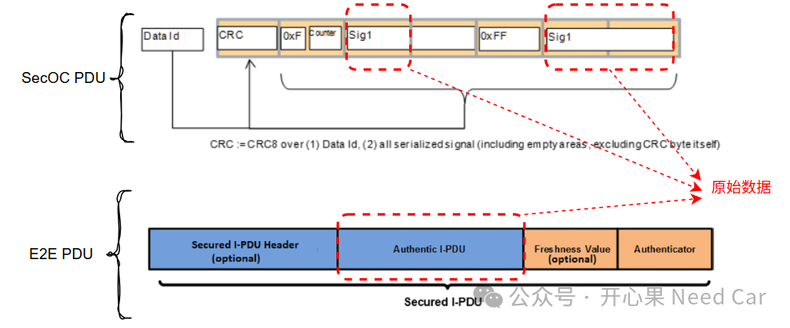
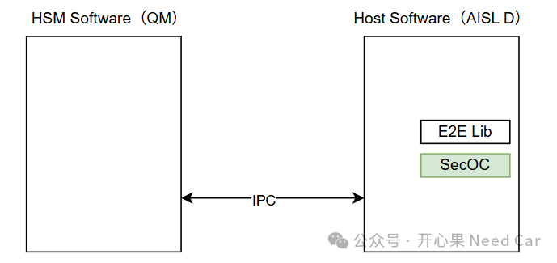

开心果 Need Car · 2025-10-24T06:21:00+08:00 · 微信原文
1、SecOC Vs E2E

按照ISO26262规范，会明确每个功能是QM还是ASIL等级，以及各个功能需要达到的ASIL等级。但是，对于一个控制器，不可能所有的功能软件都达到最高等级（比如：ASIL D），这是不现实的，而且安全等级不能单纯的看某个软件部分，它需要看整个系统的安全性。是软件、硬件和与之交互信息系统的安全等级。举个例子：一个控制器的所有软件都是AISL D等级，硬件的主芯片达不到ASIL D要求，这个系统是ASIL D的吗？因为真正的达到ASIL D极具挑战性，这涉及从产品/系统概念开始的整个设计流程均需要达到对应的要求。
对于HSM Software和Host Software软件的功能安全等级划分，示意如下：

对于不同的功能安全等级软件，我们知道：高等级可以访问低等级的资源。比如ASIL D的软件可以调用ASIL B的接口等，只要确保两者资源的隔离，确保ASIL B给ASIL D的输入不会造成破坏，ASIL D的系统依然可以达到其所要求的安全等级。
所以，对于同一帧PDU，使用SecOC替换E2E，会破坏原有的功能安全等级吗？再者，SecOC模块本身就属于ASIL D软件的一部分，它可以访问HSM Software（QM）的资源，只要QM元素不影响ASIL D软件的安全功能。HSM软件与Host端软件内存上和物理上隔离，两者的通信机制使用IPC（Inter-Process Communication，进程间通信），所以，也能达到功能安全要求的无干扰性（Freedom from Interference）。
有人可能会说，SecOC对资源的消耗大。这是不争的事实，但是，问题讨论的出发点：一帧PDU既设计成了SecOC，又设计成了E2E。这本就是资源的进一步消耗，去掉E2E，只保留SecOC不是更节省资源了吗？
往期精彩回顾